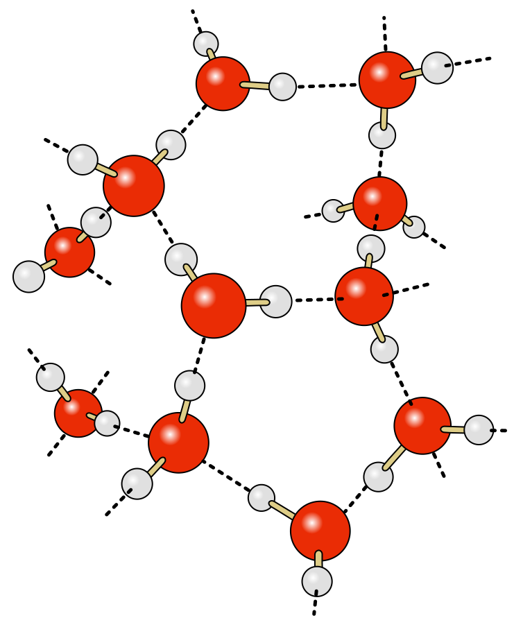

Вода. Водородная связь.
Роль воды в живой природе.
- Вода - главное неорганическое вещество клетки. Она занимает 70 - 85% клетки.
- Вода - хороший растворитель, в ней идут все химические реакции в клетке.
- Вода участвует во многих химических процессах в клетке.
Строение молекулы воды.
В молекуле воды атомы соединены полярной ковалентной связью.

Молекула воды. Скачать изображение
Молекула воды - диполь. Она полярна(разница электроотрицательностей кислорода и водорода больше 0.4).
Водородная связь.
Между молекулами воды образуется водородная связь. Водородная связь – это электростатическое притяжение между противоположно заряженными полюсами молекул с полярной ковалентной связью.

Водородная связь. Скачать изображение
{kind=link}
Взаимодействие воды с другими веществами.
По взаимодействию с водой вещества делятся на:
- Гидрофильные
- Гидрофобные
Гидрофильные вещества.
Гидрофильные вещества - вещества, состоящие из молекул, образованных ковалентной полярной или ионной связью. Они растворяются или смачиваются водой.
Гидрофобные вещества.
Гидрофобные вещества - вещества, состоящие из молекул, образованных ковалентной неполярной связью. Они нерастворимы в воде.
Функции воды в организме:
- Вода растворяет вещества цитоплазмы при этом не растворяя покровы организма и мембраны клеток.
- Вода участвует в транспорте веществ, растворяя их.
- В водном растворе идет большая часть реакций в клетке.
Состав клетки.
До 98%:
- Углерод(C)
- Водород(H)
- Кислород(O)
- Азот(N)
До 2%:
- Калий(K)
- Натрий(Na)
- Кальций(Ca)
- Магний(Mg)
- Хлор(Cl)
- Железо(Fe)
До 0.01%:
- Цинк(Zn)
- Марганец(Mn)
- Медь(Cu)
- Фтор(F)
- Йод(I)
- Кобальт(Co)
- Молибден(Mo)
До 0,00001%:
- Уран(U)
- Радий(Ra)
- Золото(Au)
Амфифильные вещества.
Амфифильные вещества - вещества, состоящие из гидрофильных и гидрофобных участков.
На этом все. Вернуться на главную